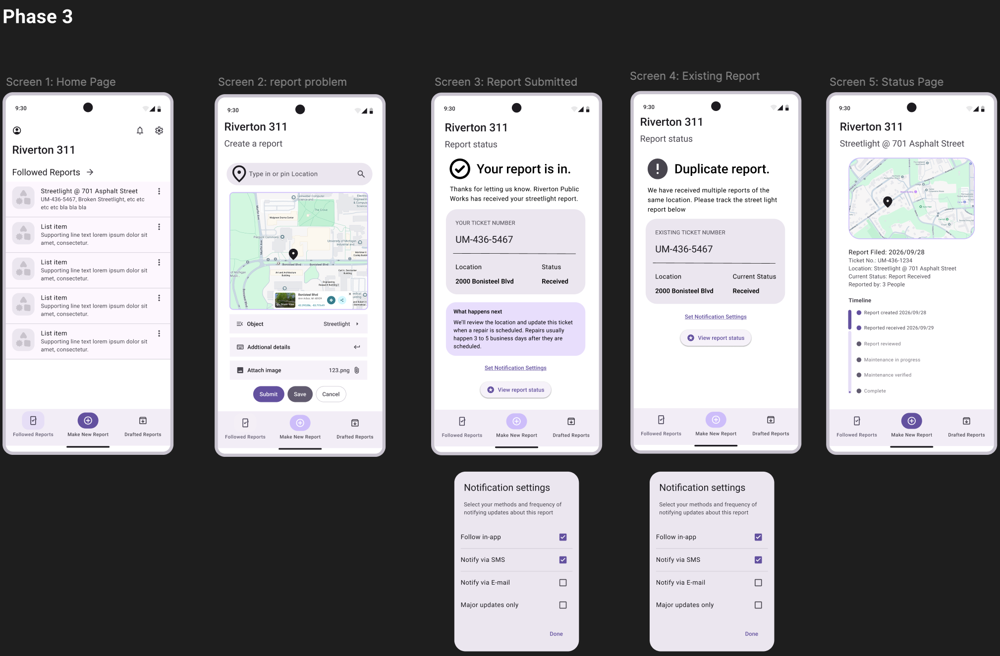
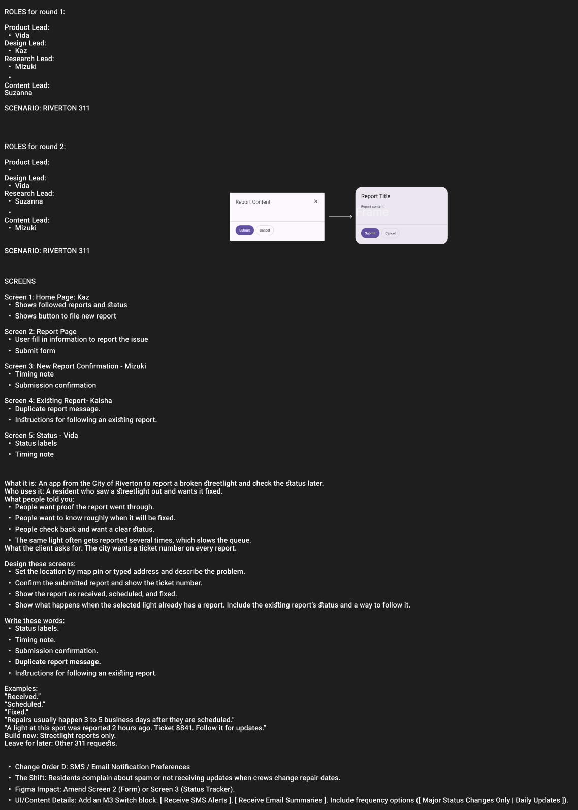
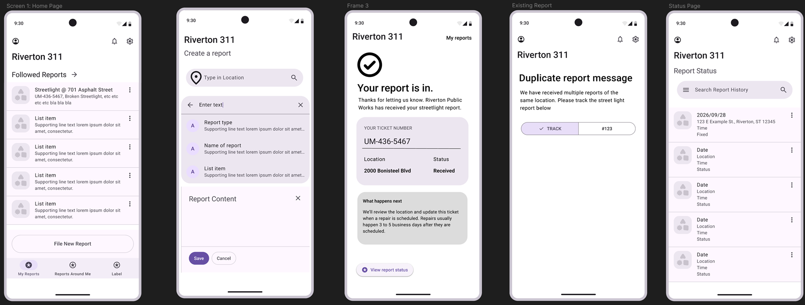
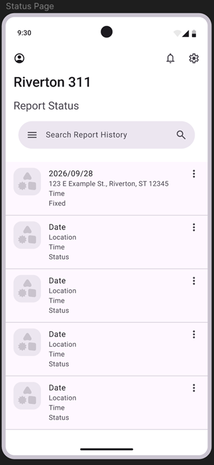
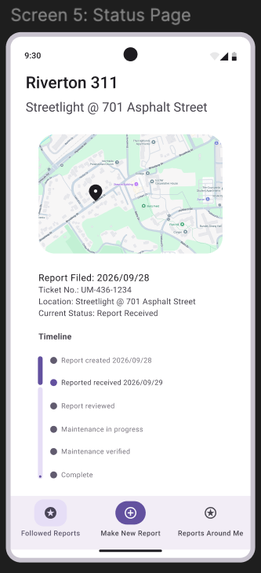
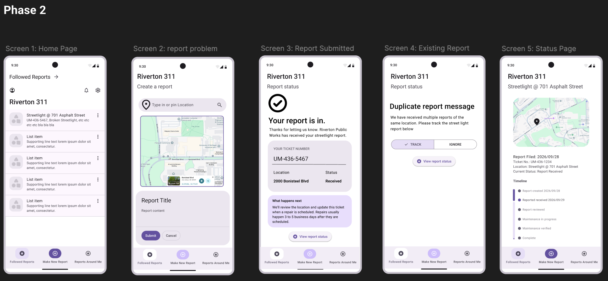
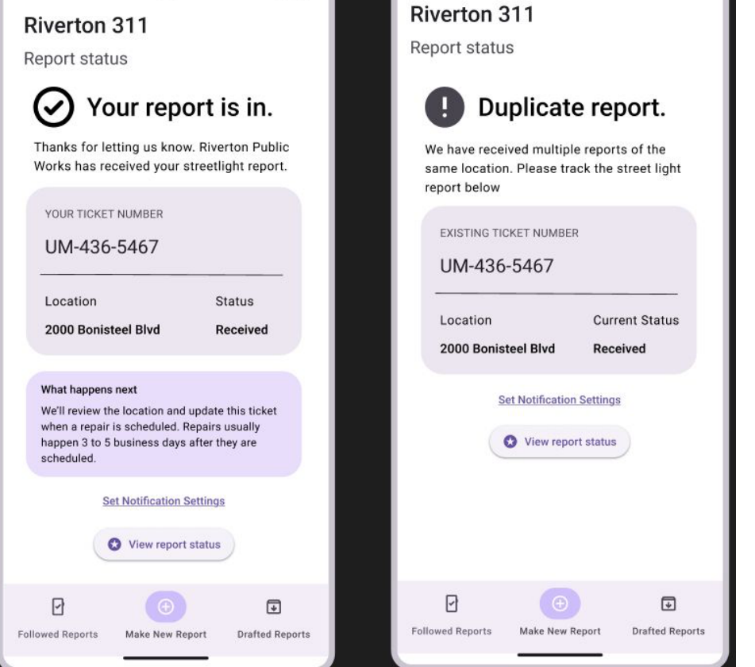
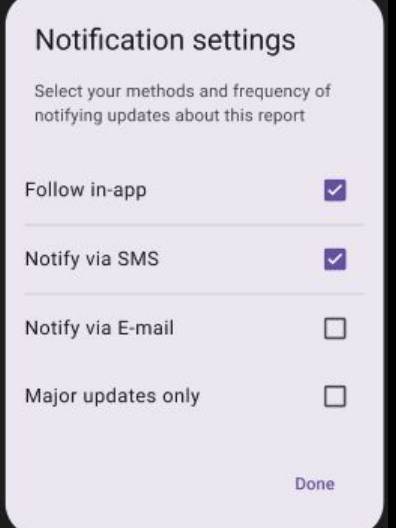
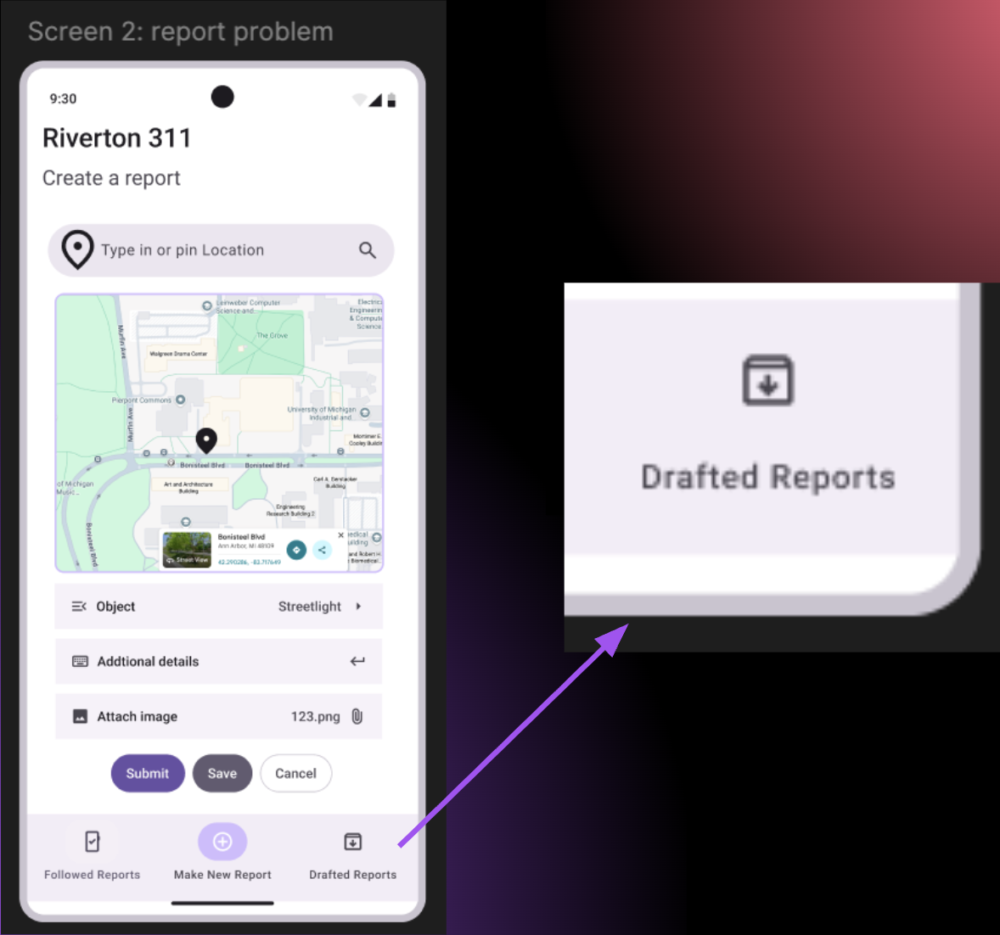

Product Team Sprint: Riverton 311
· UT 330 · Group Project
Project Overview
In this project, I worked with four other students to design Riverton 311, a city service app that allows residents to report broken streetlights and check their repair status.
We used Figma and the Material 3 Design System to create a mobile task flow. Our design needed to help residents submit a report, receive a ticket number, check the repair status, and follow an existing report instead of submitting a duplicate.
We worked through three design phases. After each phase, we collected feedback from other teams and our instructor, then improved our screens.
Our main goals:
- Help residents report a broken streetlight with a clear location and description
- Confirm each submission with a ticket number
- Show the report status and expected repair timing
- Allow residents to follow existing reports to reduce duplicate submissions
- Keep the interface consistent across screens

Planning & Team Organization
At the beginning, we broke down the project brief, identified the important features, and decided what each screen should include. We also kept notes in our shared Figma file about the requirements, team roles, design decisions, and feedback.
In Phase 1, I was the Product Lead. I helped set the overall direction, organize what we needed to design, and divide the work among team members. We decided to create five screens instead of the suggested four so that each of our five members could take responsibility for one screen.
I was responsible for Screen 5: Report Status. Although we initially assigned Product, Research, Design, and Content Lead roles, these roles became less strict later. We found that working through problems together was more efficient than keeping every task within a fixed role.

Design Process & Iterations
Phase 1: Initial Design
In the first phase, each team member built an assigned screen using the Material 3 Design Kit. We focused on creating the main task flow before refining the details.
For my Report Status screen, I used a list-based layout to show reports and their current status. However, our first round of feedback showed that some screens were too wordy, the report form needed a map and location pin, and text sizes and layouts were not consistent enough.


Phase 2: Responding to Feedback
After the first feedback round, we added a map and location pin to the report form and made the bottom navigation more consistent.
I redesigned the Report Status screen by replacing the wordy list-based layout with a vertical status timeline. This made the progress of a report easier to understand without reading through long descriptions. It also helped organize the information more clearly.


Phase 3: Refining the Experience
After Phase 2, we received feedback that the report form needed clearer instructions. We revised the form to guide residents on what to enter and added an option to attach an image.
In this phase, I worked more closely with other team members rather than only improving my own screen. I helped refine the change orders, including notification settings and other additional features.
We also refined the interface together by adding icons, adjusting visual details, and making the navigation bar colors more consistent across screens. These changes helped the different screens feel like parts of the same app.
Responding to Change Orders
Notification Settings
One change order described residents receiving too many notifications or missing updates when repair dates changed. We added a link that would open a Notification Settings pop-up, allowing residents to choose how they receive updates and whether they only want major updates.
I helped refine this feature with my teammates during Phase 3.


Save and Finish Later
Another change order focused on residents who start a report while walking or driving and cannot safely complete it. Our team added a Save option to the report form and a Drafted Reports section in the navigation bar.
This helped us think about situations where users need to pause a task and return to it later.

Final Feedback & Future Improvements
After Phase 3, we received feedback that the app should make it clearer how residents follow existing reports. One suggestion was to show the current status of each followed report directly on the home page.
We also identified two areas for future improvement:
- Personalized visual design: We followed Material 3 closely, but could develop a more distinct color scheme and visual identity for Riverton 311.
- Additional screens: Some functions, such as returning to saved reports, were suggested in the interface but did not have complete screens showing the full task flow.
Personal Reflection
Through this project, I learned more about how interaction design develops through teamwork, feedback, and iteration.
As the Product Lead in Phase 1, I helped organize the team and set our initial direction. However, I also learned that fixed roles were not always the most efficient way for us to work. We made better progress when we discussed problems and improved screens together.
Redesigning the Report Status page was an important part of my experience. By changing a wordy layout into a visual timeline, I saw how the same information could become easier to understand through a different presentation.
The change orders also helped me understand that design requirements can change during a project. We needed to consider additional user situations, such as managing notifications and saving unfinished reports.
For our final presentation, I presented the change order section and helped plan how we divided the speaking roles among team members.
Overall, this sprint gave me more experience in collaborative interface design, working with a design system, and improving a product through multiple rounds of feedback.